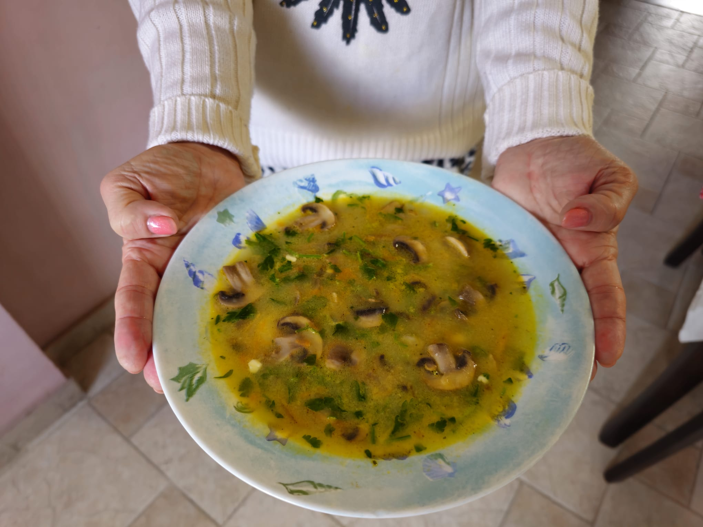
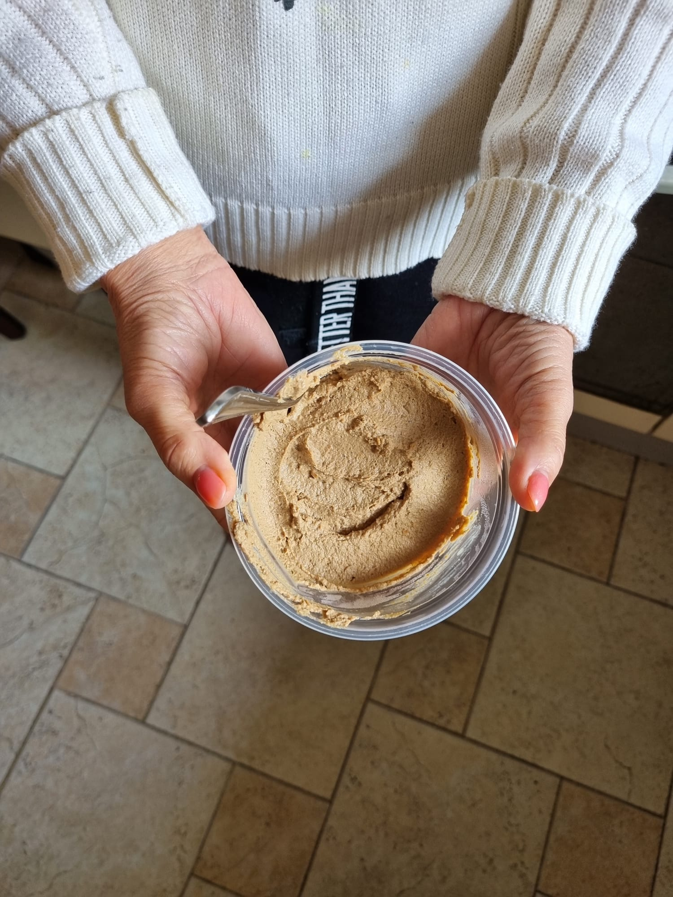

Меню
❦ ❦ ❦

Котлеты 2 2 2
★ Фирменное блюдо ★
Котлеты, легко и быстро

Курица по Еврейски
★ Магия при приготовлении! ★
Быстро и вкусно

Соленые Огурцы
★ Супер Закуска ★
Хрустящие и вкусные

Грибной Суп
★ Зимний Деликатес ★
Насыщенный и вкусный

Паштет из куриной печени
★ Деликатес по Французски ★
Мягкий и насыщенный вкус
❦ ❦ ❦
Котлеты 2 2 2
Ингредиенты:
- Куриная грудка - 1 кг.
- Майонез - 2 ст. ложки
- Мука - 2 ст. ложки
- Яйца - 2 шт.
- Соль, перец, сухой чеснок или другие приправы по вкусу
Подготовка:
- Помыть грудку.
- Очистите ее от сухожилий и косточек, если есть
- Нарезать кубиками 1×1.
- Добавить все ингредиенты и хорошо вымешать
- Хорошо разогреть сковородку.
- Налить масло и выложите котлеты.
- Берите фарш влажной ложкой, чтобы котлеты было легко выкладывались на сковородку.
- ЧОбжарьте котлеты с одной стороны, переверните и накройте крышкой Так котлетки лучше приготовится внутри Когда вторая сторона зарумянится Можно снимать их со сковородки
- Приятного аппетита.
Курица по Еврейски
Ингредиенты:
- Курица (желательно ножки,) но можно и грудки – сколько поместится на сковороде
- Лук — 3 шт. большие
- Пол чайной ложки соды
- Соль и перец по вкусу
Приготовление:
- Вымойте курицу.
- Очистить от сухожилий и костей.
- Грудку разрежьте на куски, ножки оставить целыми.
- Хорошо разогреть сковородку.
- Налить немного масла
- Лук мелко нарезаем и обжариваем до прозрачности, не зажаривая.
- Добавьте половину чайной ложки соды и перемешивайте пару минут.
- После того как лук желтеет и превратится в кашу поверх выкладываем мясо.
- Когда лук пожелтеет и станет мягким как кашица, положите сверху мясо.
- Посолить и попечить мясо
- Готовьте 20 минут без крышки.
- Переверните мясо, еще раз посолите и поперчите.
- Готовьте еще 20 минут уже под крышкой.
- Курица должна подрумяниться с двух сторон.
- Снимите с огня и лучше переложите в другую посуду, чтобы луковый соус не пригорел при остывании на сковороде.
- Приятного аппетита!
Соленые Огурцы
Ингредиенты:
- Тонкие огурцы
- Укроп
- Чеснок
- Соль
- Уксус
- Перец горошком
Приготовление:
- Хорошо вымойте огурцы и укроп.
- Очистите чеснок (примерно ¾ большой головки).
- Каждый крупный зубчик чеснока можно разрезать пополам.
- На дно ёмкости положите стебли укропа и часть чеснока.
- Отрежьте концы огурцов с двух сторон.
- Выложите огурцы слоями, посыпьте чесноком. Верхний слой укроп
- Для маринада На 1 литр кипятка добавьте 2 столовые ложки соли и 1 столовую ложку уксуса
- Количество рассола зависит от количества огурцов и ёмкости, в которой вы готовите.
- Залить огурцы рассолом Рассол долден закрыть огурцы полностью
- Добавьте сверху 10 горошин черного душистого перца
- Не закрывайте крышку и оставьте на 2 дня при комнатной температуре.
- Если по вкусу Почти готово закрываем крышкой и ставим в холодильник
- Через 2 дня разрезать попробовать огурец. Если он готов, накрыть крышкой и убрать в холодильник Если он ещё сладковат оставить ещё на день при комнатной температуре
- Приятного аппетита!
Грибной суп
Ингредиенты:
- 1 средняя луковица
- 1 большая морковь
- 2 упаковки шампиньонов (400-500 г)
- 1 картофелина
- 1 большой зубчик чеснока (можно использовать 2 по вкусу)
- 1 плавленый сырок
- Полная столовая ложка сухого куриного бульона
- Чайная ложка грибной приправы
- Соль и перец по вкусу
Приготовление:
- Мы замачиваем зелень в воде, чтобы из нее вымылись все химические вещества.
- Очищаем картофель и нарезаем его кубиками.
- Натираем морковь на крупной терке.
- Грибы, если они твердые и молодые, только моем и обрезаем кончики ножек; если они не очень свежие, то их нужно почистить.
- Порезать грибы по форме гриба (вдоль)
- Лук порезать мелкими кубиками
- Бросаем картофель в кипящую воду.
- За время варки кортошки на сковороде готовим зажарку.
- Кладём сливочное масло на разогретую сковороду, добавляем лук и обжариваем его до прозрачности, добавляем морковь и тушим вместе 3 минуты.
- Добавляем грибы, посыпаем грибной приправой и тушим до готовности грибов
- За это время картофель сварится, выкладываем зажарку в кастрюлю и варим всё вместе ещё 5 минут.
- Плавленный сыр нарезаем мелкими кубиками, делаем небольшой огонь и по очереди бросаем кусочки сыра, помешивая. (Сыр должен расплавиться)
- По желанию добавляем столовую ложку сухого куриного бульона.
- Вынимаем петрушку из воды и мелко нарезаем её без ножек, выдавливаем на неё большой зубчик чеснока.
- И всё вместе бросаем в кастрюлю.
- Приправляем солью по вкусу
- Доводим до кипения и выключаем.
- Суп готов. Приятного аппетита!
Паштет из куриной печени

Ингредиенты:
- Куриная печень 1 кг
- Большая луковица 1
- Большая морковь 1
- 100/150 г сливочного масла
- 1/2 чайной ложки мускатного ореха
- 1/2 чайной ложки черного перца
- Cоль по вкусу
Приготовление:
- Замочите печень в воде, чтобы удалить кровь.
- Промойте в дуршлаге и дайте воде стечь.
- Очистите печень от пленок
- Разрежьте пополам.
- Нарежьте лук полукольцами.
- Положите лук и морковь на разогретую с маслом сковороду, поджарить Можно добавлять немного воды , чтобы быстрее протушилось
- Добавьте печенку и перемешайте.
- Посыпьте всеми специями и ещё раз перемешайте.
- Тушим все вместе до готовности печенки буквально несколько минут. Можно под крышкой
- Вылодите готовую смесь в чашу блендера, добавьте сливочное масло и взбейте до однородной массы
- Попробуйте на вкус и добавьте недостающие ингредиенты.
- При желании, если паштет получается суховатый , можно добавить жидкость из сковородки , которая выделялась при тушении
- Приятного аппетита!